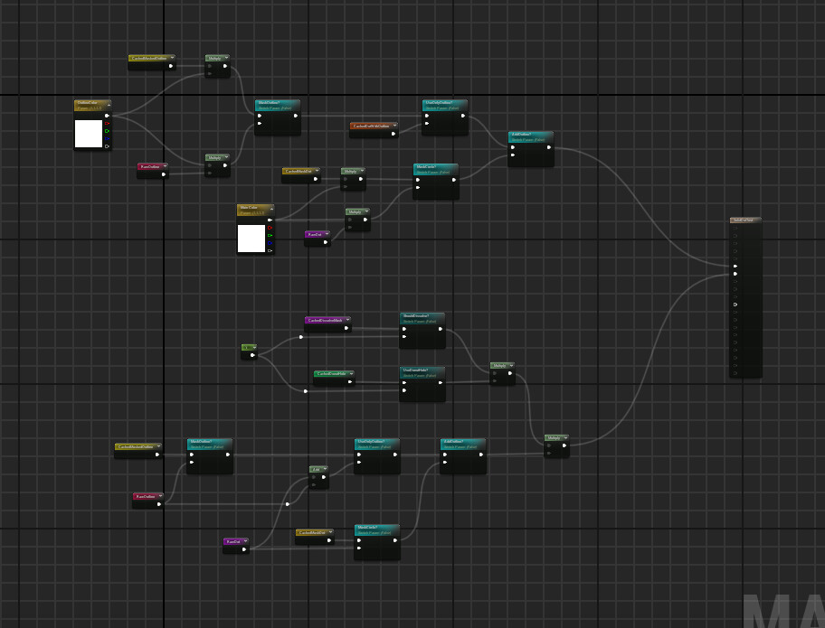
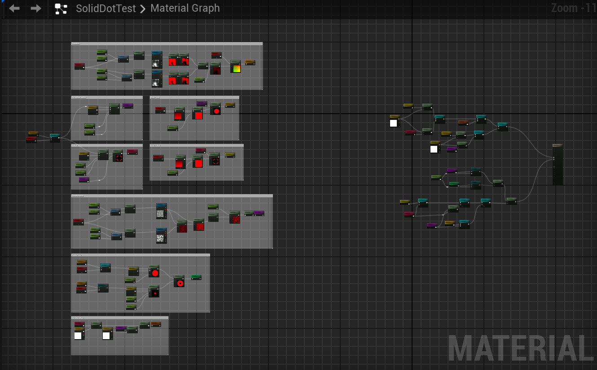
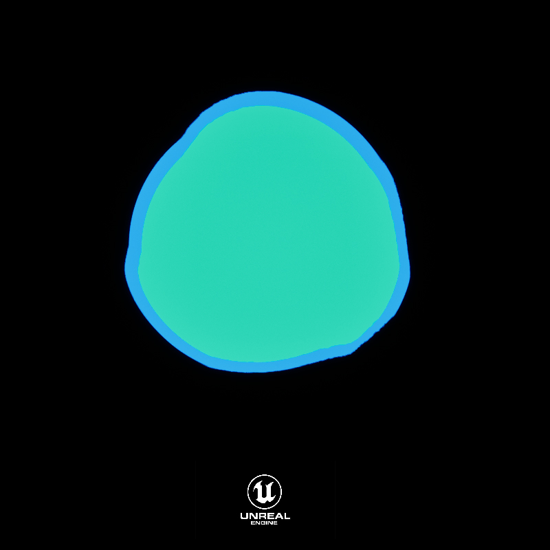

Master Material For Dot Creation
Master modular material for dot creation
Overview
I’ve been looking for ways to make the process of creating effects more efficient. While analizing different effects, I noticed that dots are a pretty common element. This gave me the idea to create a Master Dot Material that can be reused by controlling parameters through material instances. It supports several styles like a simple dot, a dot with an outline, a donut-shaped with a hole in the middle, or even just the outline by itself. On top of that, I added options for masks, distortion and dissolve effects, which can be animated and managed by dynamic parameters. You can also control others properties such as speed, color, distortion or dissolve intensity, and even switch out textures. The goal with this project was to build a flexible and modular tool that speeds up the VFX workflow while giving creative control to the artists.
Firstly
Additional Notes
One of the biggest challenges of this project was being able to combine all the different channels, opacities and masks correctly. This was a great challenge for me to further undestand how each type of color channel, blending and opacities work together.
As well it was interesting dinding how to make the material modular to support further changes and keeping the graph clean so other artists can go through it or even update the material. Keeping the graph clean and adding comments is a escencial port of working on larger teams and this was one of the aspects I wanted to practice and show after on this effect.


